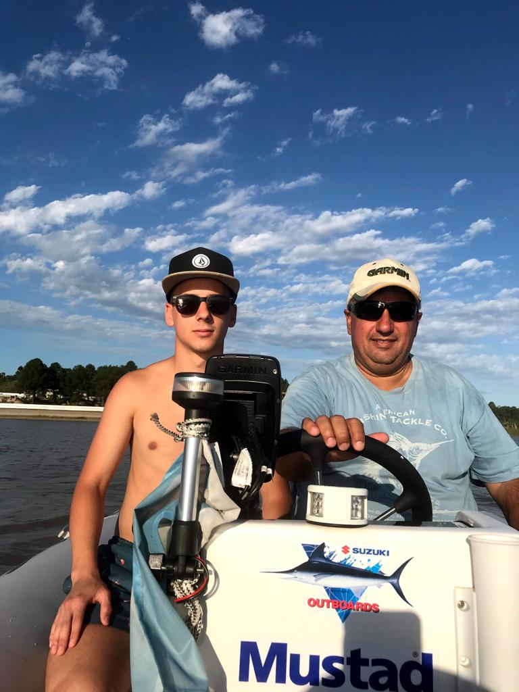

Somos una empresa familiar con mas de 20 años en el rubro, diseñando cartografias nauticas para empresas como Garmin, Lowrance o Simrad. Queremos que la gente navegue segura y con confianza, por eso poseemos con un equipo de mas de 100 empleados divididos en programadores - cartografos - administrativos - etc. Para mantener las cartas actualizadas con la batimetria exacta contamos con un grupo de 25 capitanes, los cuales estan relevando las mareas y profundidades las 24hrs. Esto es lo que nos hace estar en lo mas alto del mercado y lograr un nombre tan prestigiado.
Foto: Relevando la batimetria con equipo GARMIN